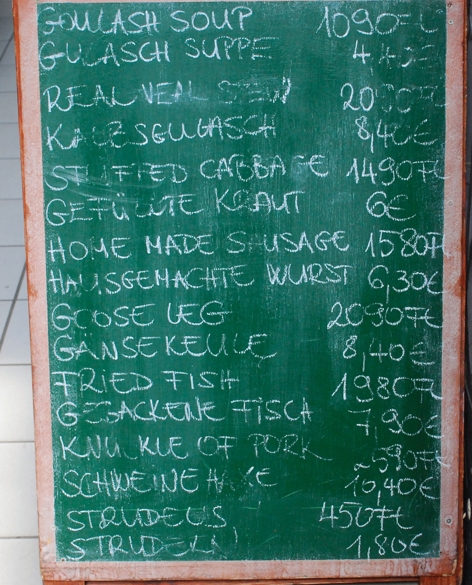

After you have read this section, you should be able to answer the following questions:
Take a look at some currency—a dollar bill, for example. It is nothing more than a piece of paper with writing on it. A very pretty piece of paper, perhaps, with fancy writing and some pictures, but it is still just a piece of paper. Yet people voluntarily give up valuable goods or services in exchange for pieces of paper. This is the mystery of money.
The question motivating this chapter—why do people want money?—is a deep one. That may seem a surprising claim because obviously we all like having money. But questions that seem trivial sometimes provide insights into how the world works. If we can understand why people want these intrinsically worthless pieces of paper, then we can understand why money is valuable. And to understand why people want these pieces of paper, we need to know what people want to do with their money.
A striking feature of modern developed economies is that people are typically specialists in production and generalists in consumption. By this we mean that most of us work at one or at most two jobs, producing (or, more often, helping to produce) a very small number of things—for example, a cattle farmer produces beef, a software designer produces computer code, and a nurse produces health services. However, we all purchase hundreds of goods and services.
There is no law that says that we have to buy goods and services using money. An alternative is to trade goods or services directly for one another. This is called barterThe exchange of goods and services without money.. We do see some barter in the world. A restaurant may allow its employees free meals at the end of the night, which means that some of the employees’ wages effectively takes the form of food. If a car mechanic and a caterer live next door to each other, they may have an informal arrangement whereby the mechanic repairs the caterer’s truck in exchange for food for a birthday party.
Sometimes we know exactly where to buy the goods and services that we want. At other times, we go looking—perhaps walking or driving from store to store, perhaps searching using a phone book or the Internet. We do this because we don’t know which store has the goods we want in stock; in addition, we might not know the prices that different stores are charging, and we want to hunt around for the best deal.
To understand the role that money plays in an economy, begin by imagining a world where we must search for the goods and services that we want to buy and there is no money, so all trades take place through barter. Imagine, for example, that you are a web designer, and you want to buy a used car. You must look around for someone who has a car for sale. This search takes time: it has an opportunity cost in that you would prefer to spend that time working or enjoying leisure. Eventually, you find someone who has a car that you are interested in buying. But your problems are not over. He has a car for sale, but what can you give him in exchange? You have to hope that he is interested in obtaining some web design services in exchange for the car. Successful barter requires a coincidence of wants: you must have what the other person wants, and they must have what you want.
A world of nothing but barter is hard to imagine. Each time you wanted to buy something from a seller in a store, you would have to exchange some good or service for that good. If you went to a café, you might have to wash the dishes in return for a coffee. Professors of economics wanting a meal would have to go from restaurant to restaurant trying to find a chef who wanted to hear an economics lecture. They would probably go hungry. It is easy to see why all societies find some way of making these transactions easier.
If you can carry some kind of money around with you to make purchases like these, life is much easier. You still have to hunt for the goods and services that you want, but you don’t have to worry about whether the other party in the transaction wants the product that you sell. Money, therefore, plays a key role in ensuring that trades occur. Trades, in turn, create value in our economy. People are not forced to buy or sell things; they do so only if the trade leaves them better off than they were prior to trading. Money therefore plays a critical role in value creation.
The reason that we rarely see exchange without money is that it is so inefficient. Without money, a coincidence of wants is unlikely, so desirable trades do not occur, and value is not created. With money, transactions are much easier. If you want a meal in a restaurant, the owner will always serve it to you if you have money. Likewise, you obtain money by working at your job. You don’t care what good or service your employer produces; as long as your employer pays you in money, you are happy to supply your labor time to them.
Let us think for a moment about what characteristics this money needs to have:
It is easy to list many things that are reasonably portable, divisible, and durable: chocolate chip cookies, cigarettes, and printer paper are just a few examples. These are not typically used as money, although they could be. If you went into a fast-food restaurant, asked for a burger, and then offered to pay using chocolate chip cookies, you can be confident that you would not get the food that you want. That is because there is a fourth characteristic of money that is rather different from the other three.
Something can function as money only if people are willing to accept it as money. It is not impossible to imagine a world where chocolate chip cookies function as money. If everyone else is willing to accept cookies in payment for goods and services, then you will be willing to do so as well. But if other people accept only printed pieces of paper as money, then you would be foolish to accept chocolate chip cookies for the product that you sell.
We know of no country, of course, that actually uses chocolate chip cookies for money. In most countries, money takes a particular form called fiat moneyIntrinsically useless pieces of paper not backed by any physical commodity that nevertheless attain value in exchange.. Fiat money is money that is not backed by any physical commodity, such as gold. Instead, the currency is intrinsically useless pieces of paper that attain value in exchange.
Fiat is a Latin word that means “let it be.” Fiat money is money just because the government says so. In a fiat money system, the government does not promise to exchange goods for money. In addition, money is not generally something that we can directly consume: most people would not enjoy eating a dollar bill. So if it doesn’t taste good and the government doesn’t promise to give you something in exchange for it, what gives fiat money value? Why are we all willing to work hard to get pieces of these—intrinsically worthless—pieces of paper?
The answer is because these pieces of paper are acceptable as money. Other people will accept them, so you and I will as well. To put it another way, fiat money has value because everyone believes it has value. Think back to the story with which we opened the chapter. The US economy uses green and white pieces of paper as money. US residents are willing to give up valuable goods and services in exchange for these green and white pieces of paper because they believe that others, in turn, will accept them. Such an arrangement sounds fragile, and it is. If everyone stopped believing that fiat money had value, this would be a self-fulfilling prophecy.Something very much like this happens in the circumstances of very high inflation rates, as explained in Chapter 26 "Inflations Big and Small".
Suppose the money in an economy changed overnight from green pieces of paper to purple pieces of paper, as we fancifully suggested at the beginning of this chapter. Everyone now works for and accepts the new purple currency. You are forced to follow. It would be foolish for you to work and accept green paper because no one would give you goods or services in exchange. Instead, you demand to be paid in purple paper because that is what you now need to buy goods and services.
Of course, we do not often observe these switches across colors of paper within an economy. People get used to one type of currency, and it is difficult to change everyone’s behavior at once. Still, Europe did, in effect, switch from green pieces of paper to purple pieces of paper. Sure enough, no one in Europe these days is willing to accept French francs, Portuguese escudos, or Finnish marks. These are the old pieces of paper. Now people will accept only the new pieces of paper.
That conversion was not truly instantaneous. Prior to the changeover to the euro, there was a switch to a dual unit of account: French bank statements in 2001 gave balances in both French francs and euros, for example. Even now, years after the changeover, bills in Europe often still appear in both the old local currency and euros. It was also possible to use the euro as a store of value before the changeover because banks started establishing accounts in euros.
Even though fiat money issued by the government is, in the end, just pieces of colored paper, it typically does have one particular property that stems from the power of the state. The US government states that it will accept dollars in settlement of government debts—most importantly, tax bills. The government also states that dollars can be used in settlement of private debts. Dollars are legal tender.There is a subtle question here about whether this aspect of money means that even intrinsically worthless currency must always have some value. If people owe debts to the government that are specified in money terms, then they will be willing to pay something for legal tender currency.
Thus far, we have thought about money in terms of its characteristics. We can also think about what makes a good or bad money in terms of the functions that it serves.
If you walk into an electronics store and see a camera with a price tag of $500, the store is making an offer to you and other customers: if you hand over ten $50 bills, you can have the camera in exchange. Money serves as a medium of exchangeAnything that will be widely accepted in exchange for goods and services..
There are other ways to purchase a camera rather than cash. You could write a check, for example, or use a debit card (a card that immediately deducts the $500 from your bank account and pays it into the store’s account). The fact that there are different ways of paying for something is a clue that there is, in fact, no single thing that we can call money. Money is anything that does what money does.
Interestingly, one common form of purchase does not involve money at all. If you use a credit card to buy a camera, you do not pay at all at the time of purchase, so no money—by any definition—changes hands. In this case, you receive the camera in exchange for a promise to pay for the camera later. It is only when that promise to pay is fulfilled that you hand over the money for the purchase.
Any medium of exchange must also serve as a store of valueAnything that can reliably be expected to maintain its worth over time.. This just means that money should keep its value between the time that you receive it (in exchange for goods that you sell or work that you do) and you spend it again.
If an object lost all or most of its value over a short period, then it would not be acceptable in exchange. So something that serves as money must be a store of value. Imagine for a moment an economy in which ice played the role of money. Except on the coldest days, the ice you receive on payday would not last long enough for you to buy anything with it. It would be a terrible store of value and, as a result, would not do a good job of facilitating exchange.
Paper money and coins are not like ice. They are durable and do not dissolve with use. Because of this, you can be confident that the dollar you have in your pocket today will still be a dollar you can spend tomorrow. The fact that people are willing to hold money for long periods of time is indicative of the role of money as a store of value. If money were not a store of value, then all people would want to get rid of cash as soon as they received it. To mix our metaphors: if money were ice, it would become a hot potato.
Being a store of value is more than just a physical property of money. Currency in your pocket can remain there for a long periods of time before disintegrating. So, in a physical sense, that currency retains its worth. But, if prices are increasing, then in terms of what the currency can buy, the money in your pocket is not retaining its value. In times of inflation, money functions less well as a store of value.
Almost universally, prices are quoted in terms of some currency, such as pesos, dollars, or euros. Goods and services sold in the United States have prices in terms of US dollars. The dollar serves as a unit of accountA standardized measure for economic transactions.. But when the very same goods and services are sold in Europe, they are priced in a different unit of account: euros. This role of money is so familiar as to be mundane, yet our economy simply could not function without a commonly accepted monetary measuring stick. It would be like building a house without an accepted measure of length or running an airline without an accepted measure of time.
The unit that people use to keep account of their monetary transactions varies from country to country. In Mexico, prices are quoted in pesos, in India prices are quoted in rupees, and so on. In most countries, the medium of exchange and the unit of account are the same thing, but this need not be true.
Because the US dollar is known throughout the world, it is often used as a unit of account in unexpected places. Prices of commodities in international transactions may be quoted in terms of the dollar even when the transaction does not directly involve the United States. Luxury hotels in China and elsewhere sometimes quote prices in US dollars even to guests who are not coming from the United States.In Chapter 18 "The State of the Economy", we discuss both nominal and real gross domestic product (real GDP). Nominal GDP is the value of all the goods and services produced in an economy, measured in terms of money. Money is used as a unit of account to allow us to add together different goods and services. Even the concept of real GDP uses money as a unit of account: the difference is that we use money prices from a base year to value output rather than current money prices. As another example, after the changeover to the euro, that currency became the medium of exchange and the “official” unit of account. But many people—at least in terms of their own thinking and mental accounting—continued to use the old currencies. In everyday conversation, people continued to talk in terms of the old currencies for months or even years after the change.On a bike trip in the summer of 2002, one of the authors had lunch in a French country restaurant. Though it was many months after the change to the euro, the menu was still in French francs. An elderly lady running the restaurant painstakingly produced a bill in euros: for each entry (in French francs), she multiplied by the exchange rate (euros to francs) and then added the amounts together. Even today, some bills and bank statements in Europe continue to quote the old currency along with the euro.
Meanwhile, merchants in countries who have not adopted the euro may still quote prices in that currency. In Hungary, the local currency is called the forint. Figure 24.3 "The Euro as a Unit of Account" shows a sign at a restaurant in Budapest, Hungary, advertising goods in both currencies: goulash soup, for example, is sold for 1,090 forint or 4.40 euro. If, as may well be the case, the restaurant is also willing to accept euros in payment, then the euro is also acting as a medium of exchange alongside the forint.
Figure 24.3 The Euro as a Unit of Account
A sign at a restaurant in Hungary quotes prices in euros and the local currency (forint).
Source: Image taken by the authors